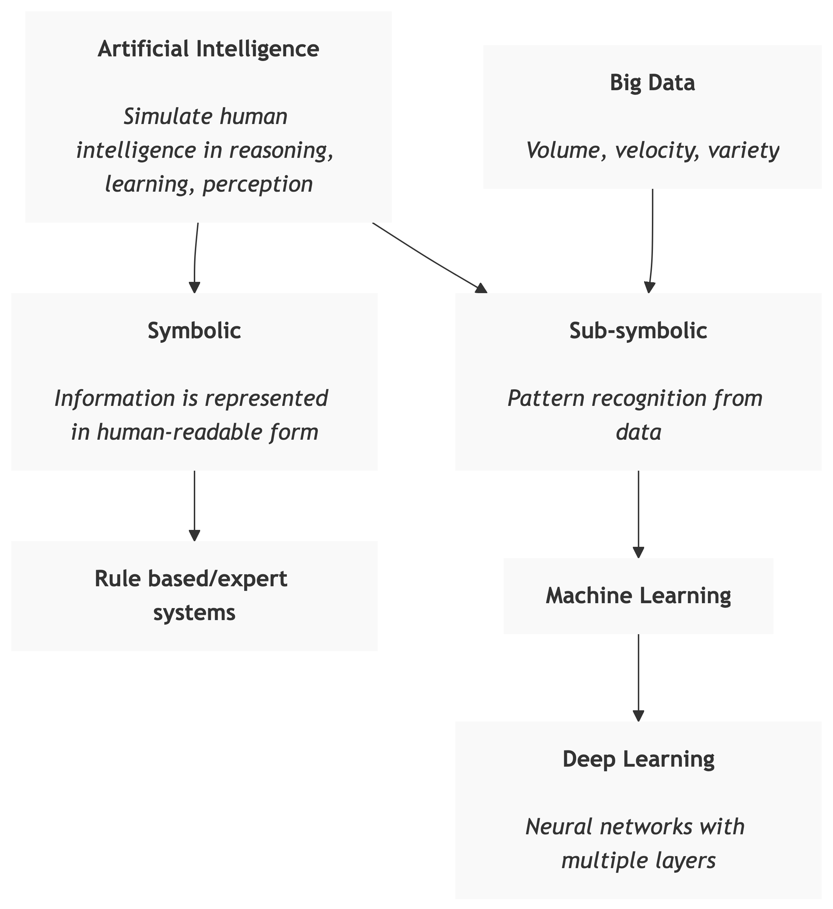
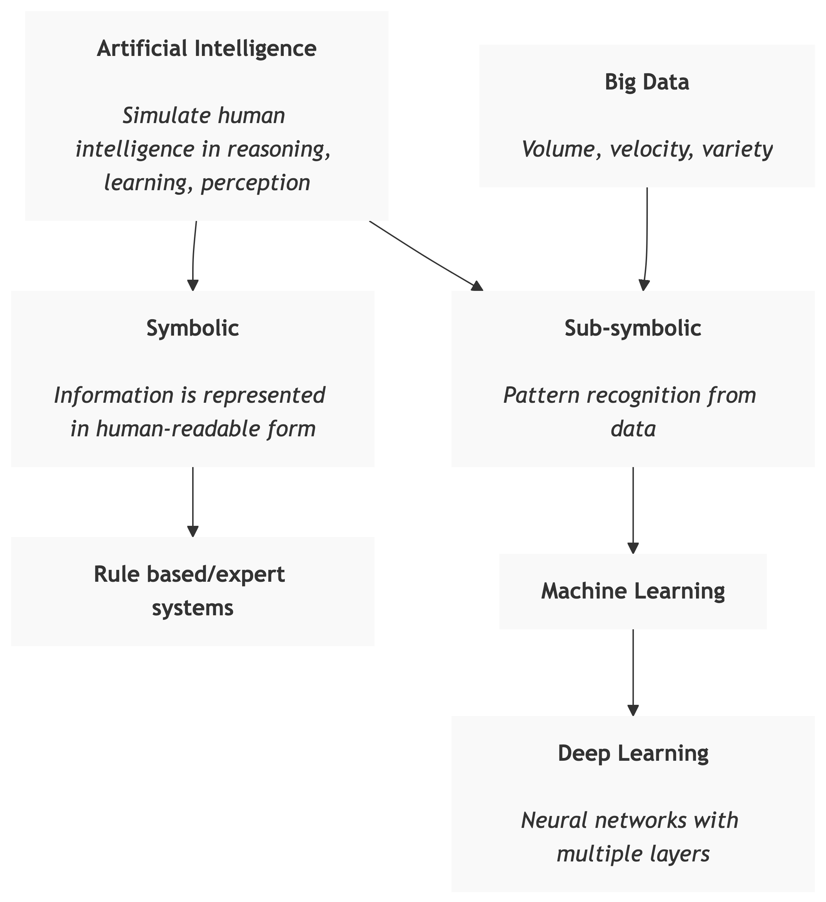

“Machine learning is a field of study that gives computers the ability to learn without being explicitly programmed.”
— Arthur Samuel (1959)
in order to
Model: A model is a mathematical, statistical, or logical representation that describes the relationship between variables and can be used to make predictions or understand patterns in data.
Learning/Training: Machine Learning employs adaptive models, which are configured and parameterised automatically based on the training data.
Each paradigm addresses different tasks and uses different learning strategies.
| Feature 1 | Feature 2 | ⋯ | Feature N | Output | ||
|---|---|---|---|---|---|---|
| Sample 1 | x11 | x12 | ⋯ | x1N | y1 | |
| Sample 2 | x₂₁ | x₂₂ | ⋯ | x₂N | y₂ | |
| Sample 3 | x₃₁ | x₃₂ | ⋯ | x₃N | y₃ | |
| ⋮ | ⋮ | ⋮ | ⋱ | ⋮ | ⋮ | |
| Sample M | xM1 | xM2 | ⋯ | xMN | yM |
\(𝑓(𝑿_{m,:};\mathbf{\theta})\rightarrow 𝑦_{m}\)
| Task | Output Variable Type | Applications |
|---|---|---|
| Classification | Categorical |
|
| Regression | Numerical continuous |
|
# Simple example: Predicting house prices
from sklearn.linear_model import LinearRegression
import numpy as np
# Training data (house size in sq ft, price in $1000s)
X_train = np.array([[1500], [2000], [2500], [3000]])
y_train = np.array([300, 400, 500, 600])
# Create and train model
model = LinearRegression()
model.fit(X_train, y_train)
# Predict price for new house
new_house_size = [[2200]]
predicted_price = model.predict(new_house_size)
print(f"Predicted price: ${predicted_price[0]:.0f}k")# Customer segmentation using K-means clustering
from sklearn.cluster import KMeans
import numpy as np
# Customer data: [age, income]
customers = np.array([
[25, 40000], [30, 60000], [35, 80000],
[45, 90000], [50, 100000], [55, 120000],
[22, 35000], [28, 50000], [40, 85000]
])
# Cluster customers into 3 groups
kmeans = KMeans(n_clusters=3, random_state=42)
clusters = kmeans.fit_predict(customers)
print("Customer segments:", clusters)
# Output: Different customers assigned to different segments| Paradigm | When to Use | Data Requirements |
|---|---|---|
| Supervised | You have labeled examples and want to predict outcomes | Large labeled dataset |
| Unsupervised | You want to discover patterns or structure in data | Unlabeled data |
| Reinforcement | You need to learn optimal actions through interaction | Environment for trial-and-error |